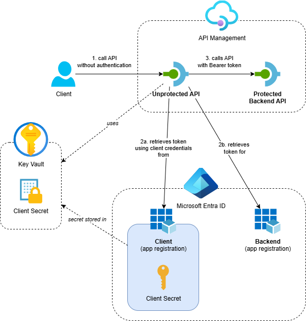
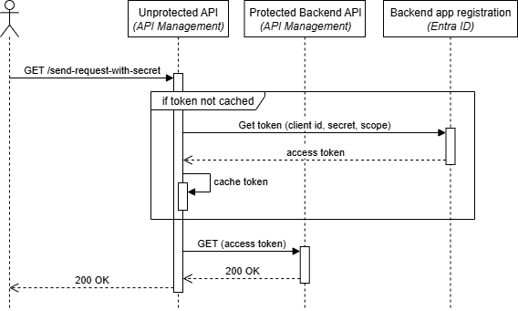

Call OAuth-Protected Backends from API Management using Send-Request Policy with Client Secret

In my previous post I showed how to use API Management’s credential manager to call OAuth-protected backends. While the credential manager offers managed token handling, it’s not always suitable. For example, when your Identity Provider enforces IP whitelisting or isn’t available in your region.
In this post, I’ll show you how to implement OAuth token handling directly using API Management policies with the send-request policy. This approach gives you complete control over the token acquisition process while storing sensitive credentials securely in Azure Key Vault.
If you can, use a managed identity to call OAuth-protected APIs from API Management. Have a look at this post for more information.
This post is part of a series about OAuth and API Management:
- Protect APIs in Azure API Management with OAuth
- Calling OAuth-Protected APIs with Managed Identity
- Calling OAuth-Protected Backends from API Management
- Part 1: Using Credential Manager
- Part 2: Using Send-Request Policy with Client Secret - this post
- Part 3: Using Send-Request Policy with Client Certificate
- Calling OAuth-Protected APIs from CI/CD Pipelines using Federated Credentials
Table of Contents
Solution Overview
The solution demonstrates API Management calling OAuth-protected backend APIs using a custom policy implementation with client credential flow and client secret authentication:

- Azure API Management service with two APIs:
- Protected Backend API: A backend API that’s protected with OAuth using Entra ID
- Unprotected API: A public API that calls the protected backend using custom token handling
- Azure Key Vault: Stores the client secret securely and provides it to API Management through a named value
- Entra ID App Registrations: Separate app registrations for the backend API and the client, with proper role assignments
- Supporting Resources: Application Insights and Log Analytics workspace for monitoring
While this example uses an API on API Management as the protected backend, you can use the same approach to call any API protected with OAuth via Entra ID and other Identity Providers.
I’ve created an Azure Developer CLI (azd) template called Call API Management backend with OAuth that demonstrates three scenarios: using the credential manager, a send-request policy with client secret and a send-request policy with client certificate. If you want to deploy and try the solution, check out the getting started section for the prerequisites and deployment instructions. This post focuses on calling OAuth-protected backends using the send-request policy with client secret.
We’re using the BasicV2 tier because the Consumption tier doesn’t support caching, which is important for token management.
Now that we’ve covered the architecture and supporting components, let’s walk through how to implement the send-request policy step by step.
Implementation
The send-request policy approach gives you complete control over the OAuth token acquisition process. The implementation is based on the Backend OAuth2 Authentication With Cache.policy.xml example from the Azure API Management Policy Snippets repository, but with some alterations for better error handling and tracing.
Here’s the complete policy implementation from send-request-with-secret.xml:
<policies>
<inbound>
<base />
<!-- Get access token from cache if it exists-->
<cache-lookup-value key="access-token-from-secret" variable-name="access-token" caching-type="internal" />
<choose>
<!-- Retrieve new access token from Entra ID if it was not found in the cache. -->
<when condition="@(!context.Variables.ContainsKey("access-token"))">
<send-request mode="new" timeout="20" response-variable-name="get-access-token-response" ignore-error="false">
<set-url>{{oauth-token-url}}</set-url>
<set-method>POST</set-method>
<set-header name="Content-Type" exists-action="override">
<value>application/x-www-form-urlencoded</value>
</set-header>
<set-body>@("client_id={{client-id}}&client_secret={{client-secret}}&scope={{oauth-scope}}&grant_type=client_credentials")</set-body>
</send-request>
<set-variable name="get-access-token-response-body" value="@(((IResponse)context.Variables["get-access-token-response"])?.Body?.As<JObject>())" />
<choose>
<!-- If access token retrieval succeeded (HTTP 200), extract the access token and cache it -->
<when condition="@(((IResponse)context.Variables["get-access-token-response"])?.StatusCode == 200)">
<set-variable name="access-token" value="@(((JObject)context.Variables["get-access-token-response-body"]).Value<string>("access_token"))" />
<set-variable name="access-token-expires-in" value="@(((JObject)context.Variables["get-access-token-response-body"]).Value<int>("expires_in"))" />
<!-- Cache the access token for 95% of its lifetime to prevent expiration issues -->
<cache-store-value key="access-token-from-secret" value="@((string)context.Variables["access-token"])"
duration="@((int)(0.95 * (int)context.Variables["access-token-expires-in"]))"
caching-type="internal" />
</when>
<!-- If access token retrieval failed, log error and return a 500 Internal Server Error -->
<otherwise>
<trace source="getAccessTokenUsingSecret" severity="error">
<message>Retrieval of access token failed</message>
<metadata name="ResponseBody" value="@{
// To prevent exceptions, ensure the message is never null or empty by always providing a value.
var body = ((JObject)context.Variables["get-access-token-response-body"])?.ToString();
return !string.IsNullOrWhiteSpace(body) ? body : "<empty>";
}" />
<metadata name="ResponseStatusCode" value="@{
// To prevent exceptions, ensure the status code is never null or empty by always providing a value.
var statusCode = ((IResponse)context.Variables["get-access-token-response"])?.StatusCode.ToString();
return !string.IsNullOrWhiteSpace(statusCode) ? statusCode : "<empty>";
}" />
</trace>
<!-- We're returning the response of the failed token retrieval. Don't do this in production as it will expose sensitive information. -->
<return-response>
<set-status code="500" reason="Internal Server Error" />
<set-header name="Content-Type" exists-action="override">
<value>application/json</value>
</set-header>
<set-body>@(((JObject)context.Variables["get-access-token-response-body"])?.ToString())</set-body>
</return-response>
</otherwise>
</choose>
</when>
</choose>
<set-header name="Authorization" exists-action="override">
<value>@("Bearer " + (string)context.Variables["access-token"])</value>
</set-header>
</inbound>
<backend>
<base />
</backend>
<outbound>
<base />
<choose>
<when condition="@(context.Response.StatusCode == 401 || context.Response.StatusCode == 403)">
<cache-remove-value key="access-token-from-secret" caching-type="internal" />
</when>
</choose>
</outbound>
<on-error>
<base />
</on-error>
</policies>
A tip for improving maintainability: I usually put the logic to retrieve an access token in a policy fragment. This makes the API or operation policy much easier to read and allows you to reuse the token retrieval logic across multiple APIs or operations.
Let me break down the key steps that the policy executes:
Step 1: Cache Lookup
The policy starts by checking if an access token already exists in the cache using cache-lookup-value:
<cache-lookup-value key="access-token-from-secret" variable-name="access-token" caching-type="internal" />
This step helps improve performance by avoiding unnecessary token requests to Entra ID when a valid token is already available.
Step 2: Token Acquisition
If no cached token exists, the policy uses send-request to call the Entra ID token endpoint with the Client Credentials Flow:
<send-request mode="new" timeout="20" response-variable-name="get-access-token-response" ignore-error="false">
<set-url>{{oauth-token-url}}</set-url>
<set-method>POST</set-method>
<set-header name="Content-Type" exists-action="override">
<value>application/x-www-form-urlencoded</value>
</set-header>
<set-body>@("client_id={{client-id}}&client_secret={{client-secret}}&scope={{oauth-scope}}&grant_type=client_credentials")</set-body>
</send-request>
The policy uses several named values that are configured in API Management:
oauth-token-url: The OAuth 2.0 token endpoint URL (for example,https://login.microsoftonline.com/{tenant-id}/oauth2/v2.0/token)client-id: The “Application (client) ID” of the client app registrationclient-secret: A reference to the client secret in Key Vault (generated and stored automatically by the this script)oauth-scope: The Application ID URI of the backend’s app registration (for example,api://appreg-oauthbackend-sdc-backend-luolm)
The ignore-error attribute is set to false so we can perform detailed error handling and tracing.
Step 3: Token Caching
When token retrieval succeeds, the policy extracts the access token and caches it using cache-store-value:
<set-variable name="access-token" value="@(((JObject)context.Variables["get-access-token-response-body"]).Value<string>("access_token"))" />
<set-variable name="access-token-expires-in" value="@(((JObject)context.Variables["get-access-token-response-body"]).Value<int>("expires_in"))" />
<!-- Cache the access token for 95% of its lifetime to prevent expiration issues -->
<cache-store-value key="access-token-from-secret" value="@((string)context.Variables["access-token"])"
duration="@((int)(0.95 * (int)context.Variables["access-token-expires-in"]))"
caching-type="internal" />
The policy caches the token for 95% of its lifetime to prevent expiration issues during processing.
Step 4: Error Handling and Tracing
Requests made by the send-request policy are not automatically logged in Application Insights. So, when something goes wrong, we need to log this explicitly using the trace policy:
<trace source="getAccessTokenUsingSecret" severity="error">
<message>Retrieval of access token failed</message>
<metadata name="ResponseBody" value="@{
// To prevent exceptions, ensure the message is never null or empty by always providing a value.
var body = ((JObject)context.Variables["get-access-token-response-body"])?.ToString();
return !string.IsNullOrWhiteSpace(body) ? body : "<empty>";
}" />
<metadata name="ResponseStatusCode" value="@{
// To prevent exceptions, ensure the status code is never null or empty by always providing a value.
var statusCode = ((IResponse)context.Variables["get-access-token-response"])?.StatusCode.ToString();
return !string.IsNullOrWhiteSpace(statusCode) ? statusCode : "<empty>";
}" />
</trace>
The code includes null checks for both the response body and status code because the trace policy’s metadata values must always have a value. If either is null or an empty string, an exception will be thrown.
When retrieval of the token fails, we return the detailed error response for demo and troubleshooting purposes, which you shouldn’t do in real world scenarios.
Step 5: Authorization Header
Once the token is available (either from cache or newly acquired), the policy adds it to the Authorization header:
<set-header name="Authorization" exists-action="override">
<value>@("Bearer " + (string)context.Variables["access-token"])</value>
</set-header>
Step 6: Cache Invalidation
In the outbound section, the policy handles cache invalidation when the backend returns authentication errors using cache-remove-value:
<choose>
<when condition="@(context.Response.StatusCode == 401 || context.Response.StatusCode == 403)">
<cache-remove-value key="access-token-from-secret" caching-type="internal" />
</when>
</choose>
This ensures that expired or invalid tokens are removed from the cache, forcing a fresh token acquisition on the next request.
Testing the Implementation
After deploying the solution, you can test the OAuth-protected backend call using the send-request policy. Here’s a sequence diagram showing the flow:

The flow demonstrates how:
- API Management receives a request on the unprotected API
- The policy checks the cache for an existing access token
- If no cached token exists, API Management calls Entra ID directly using the send-request policy
- The policy caches the token for subsequent requests
- The request is forwarded to the protected backend with the token
You can test the implementation using the following request. Replace <your-api-management-service-name> with the actual name of your API Management service:
# Operation that will call the protected backend using the send-request policy with a secret
GET https://<your-api-management-service-name>.azure-api.net/unprotected/send-request-with-secret HTTP/1.1
The request should succeed with a 200 OK response, showing that the policy successfully obtained an access token and called the protected backend.
For demonstration purposes, the response includes the JWT token. You shouldn’t return tokens in production environments, as this can expose sensitive information.
If you execute the request multiple times, you’ll notice that the IssuedAt value in the response doesn’t change initially, showing that the policy caches tokens for improved performance.
Considerations
While this approach uses client secrets stored securely in Key Vault, certificates are recommended over client secrets for stronger security. The next post in this series will demonstrate how to use certificate-based authentication with JWT assertions, which provides better security since the private key never leaves the client.
The policy implementation explicitly uses caching-type="internal" to ensure tokens are stored in API Management’s built-in cache. According to the Microsoft Caching overview documentation: “By default in caching policies, API Management uses an external cache if configured and falls back to the built-in cache otherwise." If you add an external cache like Azure Cache for Redis, access tokens could potentially be stored there, where users with sufficient permissions might view them. Caching access tokens in an external cache should be a deliberate decision with the security implications carefully considered.
Conclusion
The send-request policy approach provides a flexible alternative to API Management’s credential manager for calling OAuth-protected backend APIs. The key benefits include:
- Complete control: Full customization of token acquisition, caching and error handling
- No shared infrastructure dependencies: All processing happens within your API Management instance, and when deployed in a VNET, you don’t need to whitelist the AzureConnectors service tag
- IP whitelisting compatibility: OAuth calls originate from your API Management service, making IP restrictions easier to manage
Although this approach involves more implementation effort than using the credential manager, it gives you the flexibility needed when the credential manager’s limitations don’t fit your requirements. In the next post, I’ll take this a step further by replacing the client secret with a client certificate for even stronger security.